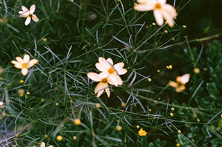
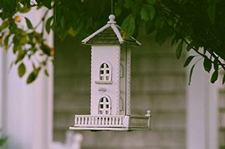
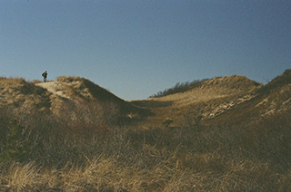
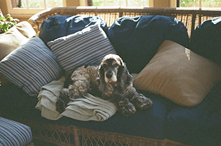
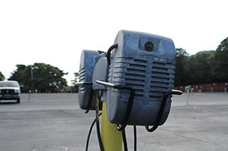
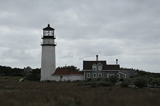
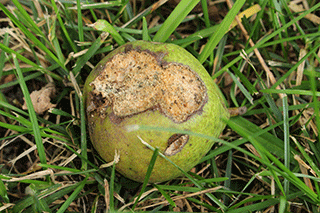

Photography
Outside of the professional world, I'm a hobbyist photographer. These are some of the shots that I'm most proud of.
Film
Photos taken with a 1981 Minolta X700 camera. Some of this series is featured as background images throughout the site.




Digital
Photos taken with a Canon SL1 DSLR camera.



